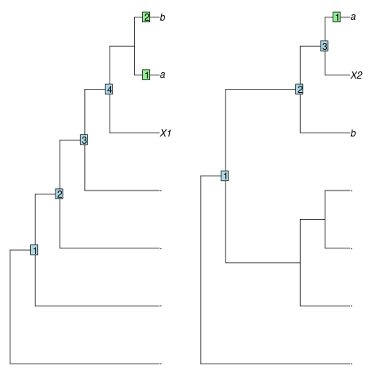

Functions to describe the position of a leaf relative to the root. 'Stemmier' leaves ought to exhibit a smaller root-node distance and a larger sister size,
SisterSize(tree, tip) # S3 method for numeric SisterSize(tree, tip) # S3 method for character SisterSize(tree, tip) RootNodeDistance(tree, tip) # S3 method for numeric RootNodeDistance(tree, tip) # S3 method for character RootNodeDistance(tree, tip) RootNodeDist(tree, tip)
| tree | A tree of class |
|---|---|
| tip | Either a numeric specifying the index of a single tip, or a character specifying its label. |
SisterSize() returns an integer specifying the number of leaves
in the clade that is sister to tip.
RootNodeDist() returns an integer specifying the number of nodes between
tip and the root node of tree.
RootNodeDistance() calculates the number of nodes between the chosen leaf
and the root of tree.
This is an unsatisfactory measure, as the range of possible
distances is a function of the shape of the tree.
As an example, leaf X1 in the tree (.,(.,(.,(.,(X1,(a,b))))))
falls outside the clade (a, b) and has a root-node distance of 4,
whereas leaf X2 in the tree (.,((.,(.,.)),(b,(X2,a))))
falls within the clade (a, b), so should be considered more 'crownwards',
yet has a smaller root-node distance (3).

SisterSize() measures the number of leaves in the clade that is sister to
the chosen leaf. In the examples above, X1 has a sister size of 2 leaves,
whereas X2, which is 'more crownwards', has a smaller sister size (1 leaf),
as desired.
Asher R, Smith MR (2020). “Forthcoming manuscript.” TBC.
Other tree characterization functions:
CladisticInfo(),
TotalCopheneticIndex()
Martin R. Smith (martin.smith@durham.ac.uk)
#> [1] 1SisterSize(pec8, 't3')#> [1] 5#> [1] 7RootNodeDist(bal8, 3)#> [1] 2RootNodeDist(pec8, 't3')#> [1] 2#> [1] 0